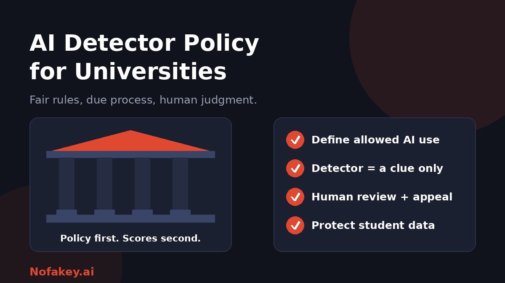

Universities are under pressure to respond to AI in coursework. Detection software can look like a quick answer, but a tool without a clear policy invites unfair outcomes: students accused on a number, staff applying different standards, and little recourse when a result is wrong. This guide sets out a practical framework for an AI detector policy that is fair, workable and defensible.
Why a detector policy matters
Detectors give probabilities, not facts, and they can be wrong in both directions. Reports of students wrongly accused after a flag have made institutions cautious, and some have restricted or switched off detection features. Even a small error rate can affect many people at scale, because a university assesses thousands of submissions. The risks are practical:
- Unfair outcomes for students whose genuine work is flagged.
- Inconsistency when each instructor decides alone how to treat a score.
- Legal and reputational exposure if decisions rest on an unreliable tool.
- Lost trust between staff and students.
For the evidence on reliability, see are AI detectors accurate?
Core principles to build the policy on
| Principle | What it means in practice |
|---|---|
| Clarity first | Students know what AI use is allowed before they are assessed |
| Proportionality | A detector is a screening aid, and consequences depend on evidence |
| Fairness | Same process for every student, with a chance to respond |
| Equity | Extra care for groups at higher risk of false flags |
| Transparency | Staff and students know which tools are used and how |
| Privacy | Student work and data are protected |
| Review | The policy is tested and updated as tools change |
Step 1: Define levels of permitted AI use
A detector cannot enforce a rule that does not exist. Start by defining what is allowed, ideally at assessment level so students can see it in each brief.
| Level | Example |
|---|---|
| No AI | Supervised exams or assessments testing unaided skills |
| Limited AI | Brainstorming, grammar or translation support, with disclosure |
| AI-assisted | Drafting or analysis with AI allowed, with disclosure and student verification |
| AI-integrated | The task requires AI use, and students critique or improve the output |
Our guide on how to label AI-generated content has disclosure wording you can adapt for student declarations.
Step 2: Set rules for how detectors may be used
- Supplementary only. A score may prompt a review, never decide an outcome alone.
- Corroboration required. Decisions need other evidence, such as drafts, version history, sources and a conversation with the student.
- No threshold-based penalties. Do not set an automatic "above X% means misconduct" rule.
- Know the error trade-off. Decide how many false accusations are acceptable, which should be very few, and test tools against that before using them. A tool that cannot show acceptable false-positive behaviour on your own student writing should not be used for decisions.
- Approved tools only. Staff should use institution-approved tools, not random free checkers.
- Record what was done. Log which tool was used, what it reported, and what other evidence was reviewed.
Step 3: Build a fair review and appeals process
- Initial concern. The marker notes why they are concerned, which may or may not include a detector result.
- Informal conversation. Invite the student to discuss the work and explain how they produced it.
- Evidence review. Look at drafts, notes, sources and version history, and check citations and facts.
- Independent decision. A second person, not just the original marker, reviews cases that may lead to a penalty.
- Written outcome. Explain the decision, the evidence used and the penalty, if any.
- Right of appeal. Provide a clear, timely route with a different reviewer.
- Support. Offer access to student advice services and to academic skills support.
Step 4: Protect students at higher risk of false flags
- Non-native English writers may be flagged more often because careful, plain prose can resemble AI patterns.
- Students using approved writing aids or accessibility tools should not be penalised for using them.
- Formal and technical writing is hard for detectors to judge.
- Short submissions are especially unreliable.
- Check for bias by looking at who is being flagged and whether outcomes differ between groups.
Step 5: Govern tools and student data
- Vendor review. Before approval, check how a tool stores submissions, whether it keeps or trains on them, and where data is processed.
- Data protection compliance. Follow your privacy and data protection obligations and run an assessment where required.
- Intellectual property. Respect students' rights in their own work.
- Access control. Limit who can see results, and keep them confidential.
- Retention. Set how long results are kept.
- Be open. Tell students what tools may be used on their work.
Step 6: Design assessment that is harder to outsource
Policy works better when assessment helps too. Consider process-based tasks, drafts and reflections, oral follow-ups, in-class components, personalised or local topics, and assignments where students critique AI output. Teaching students to evaluate AI content also builds the skills they need. See how to teach students to spot AI content.
Sample clauses you can adapt
These are starting points, not legal text. Have your policy, legal and student representatives review and adapt them.
Permitted use
Each assessment brief will state the permitted level of generative AI use. Where AI use is allowed, students must declare what tools they used and how.
Detector scores
AI detection results are not evidence of misconduct on their own. They may be used only to prompt further review and must not be the sole basis for any finding or penalty.
Student response
Before any finding, the student will be told the concern, shown the evidence considered, and given a fair opportunity to respond, with access to support and representation.
Appeals
Students may appeal any decision to an independent reviewer who was not involved in the original case.
Tools and data
Only approved tools may be used to analyse student work. Approval requires a review of data handling, retention and use of submissions for training.
Review
This policy will be reviewed at least annually, including its effect on different groups of students.
Train staff and inform students
- Train staff on what detector scores mean and do not mean, and how to run a fair conversation.
- Publish the policy in plain language, with examples of acceptable and unacceptable use.
- Give students a safe route to ask questions about AI use before they submit.
- Share guidance for research too. For research degrees and journals, see AI-generated research paper detection.
Related approaches
Publishers and editors face similar questions. Our guide to AI detectors for publishers and editors shows a review workflow that translates well to universities, and AI watermark detection explains one alternative method and its limits.
Conclusion
A university AI detector policy should protect academic integrity and students at the same time. Define permitted AI use, restrict detectors to a supporting role, require evidence and a fair hearing, protect those most at risk of false flags, govern data carefully, and review it often. Not sure whether a claim or message is reliable? Paste it into our free checker, and find more guides on the Nofakey.ai blog.
Frequently asked questions
Should universities use AI detectors?
They can be used as a screening clue, but results should never be the sole evidence in a misconduct case. A fair policy requires corroborating evidence, a conversation with the student, and a right of appeal.
What should an AI detector policy include?
Clear rules on permitted AI use, disclosure requirements, how detector scores may and may not be used, a fair review and appeals process, protections for non-native English writers, data protection rules for any tool, and a regular review date.
Can a detector score be used as proof of misconduct?
No. A score estimates resemblance to AI patterns and can be wrong in both directions. It should only prompt further review.
How should universities handle student data in AI detectors?
Review the vendor’s data handling before approval, check whether submissions are stored or used for training, and follow your data protection and intellectual property rules.
How often should an AI policy be reviewed?
Review it at least once a year, and sooner if tools, laws or evidence change significantly.
Want a quick first read on a claim or message?
Run it through the checker